Beam Clash Art — Round 1
Five shared clash-effect candidates and Naruto’s optional two-handed Rasengan struggle pilot. All art is unapproved and remains review-only.
Please do not approve Naruto beamStruggle v01 as production art yet. Its strict 48-color pack failed against the approved idle: head/hair measured 1.40× and feet 0.62×. Estimated palm points also drift between frames by more than the 6 px limit. The required body sheet and final Astra audit are not available for this failed pack.
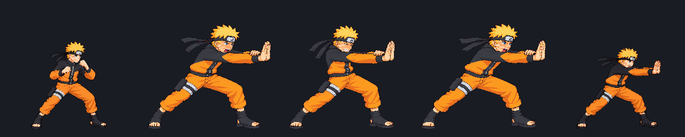
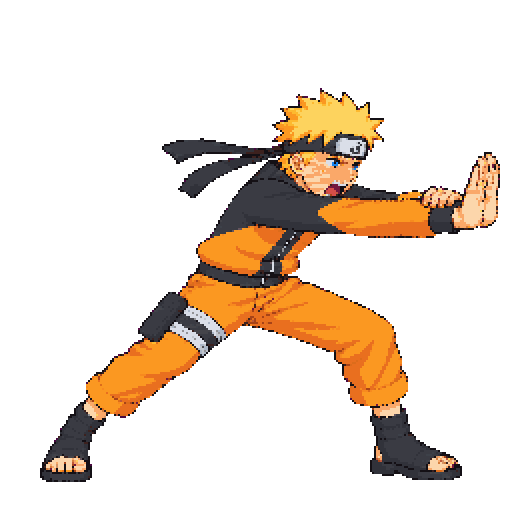
The image-generation budget is exhausted for this round. The raw candidate stays versioned, and the failed scale/contact checks are recorded in art/REVIEW.md. The approved art and production atlas remain unchanged.
Shared clash effects
Each contact sheet shows the packed 128×128 frames enlarged 4× with nearest-neighbor scaling. The GIF beside it loops at the brief’s per-frame timing.
clashBurst 6 frames · 45 ms
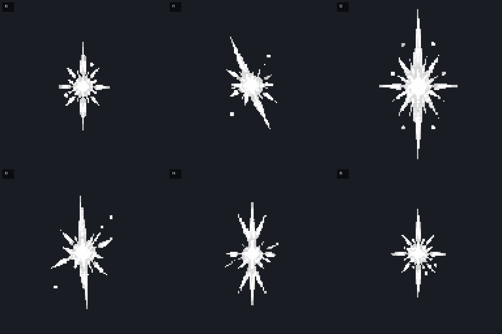
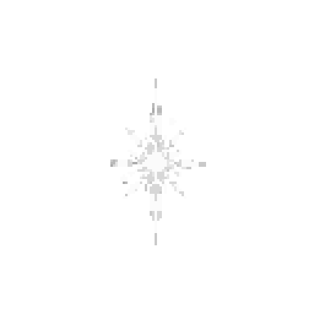
streamBolt 4 frames · 40 ms
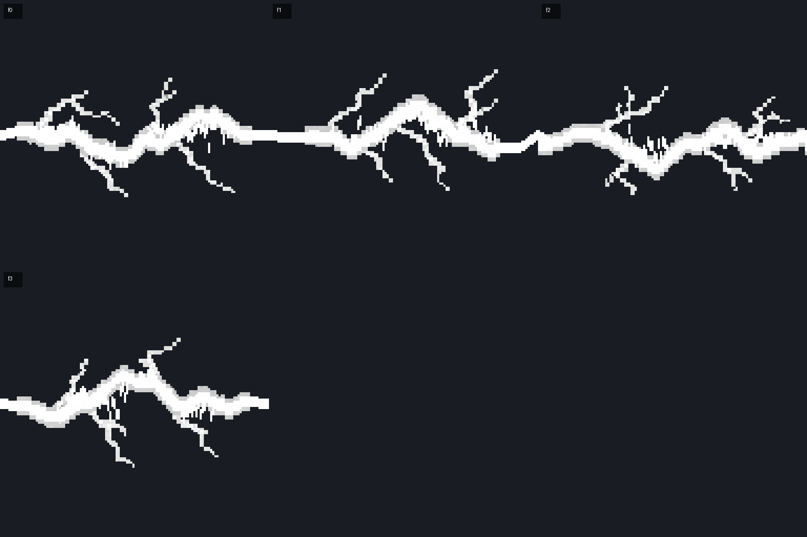
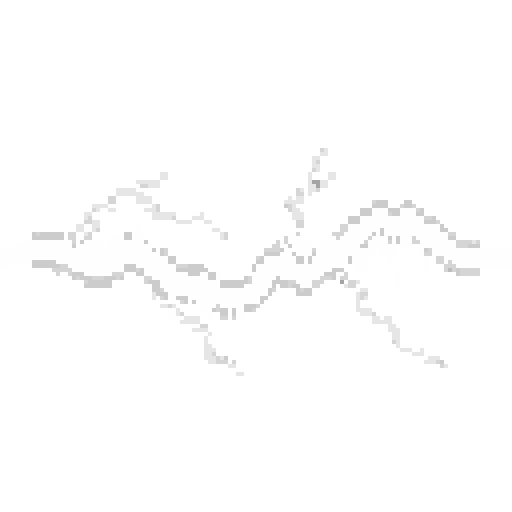
Two-copy tile seam check, every frame
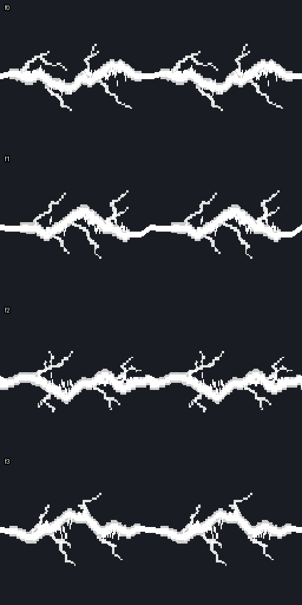
streamLance 4 frames · 40 ms
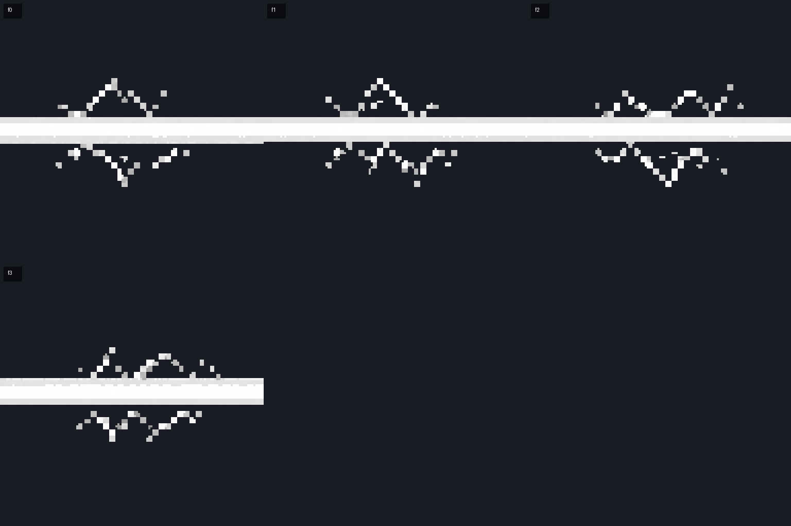
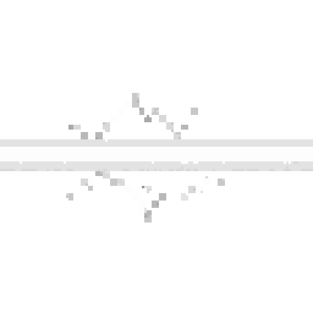
Two-copy tile seam check, every frame
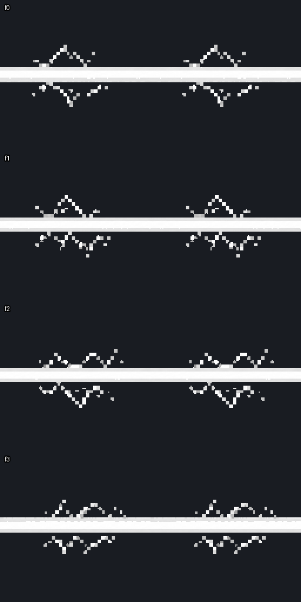
streamFlame 4 frames · 50 ms
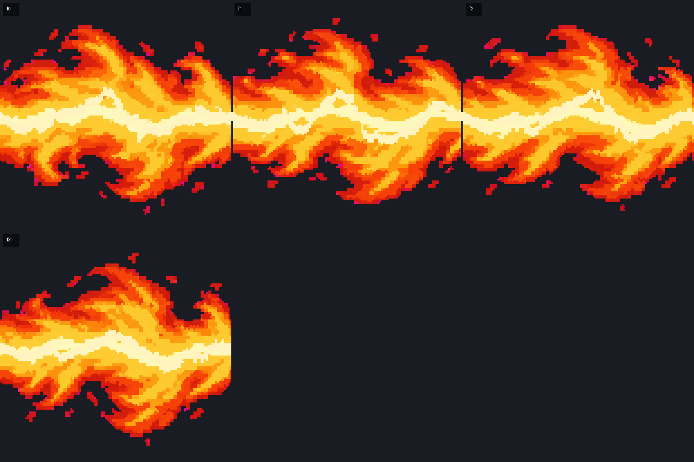
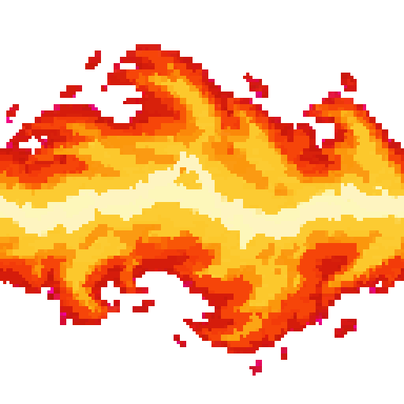
Two-copy tile seam check, every frame
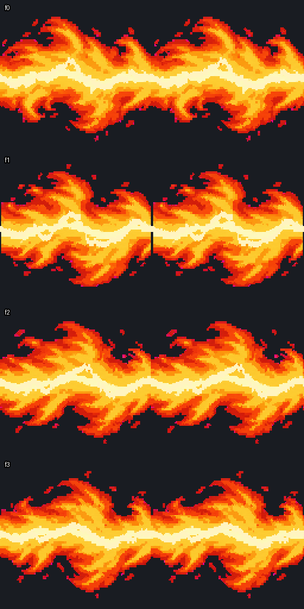
redOrb 6 frames · 40 ms
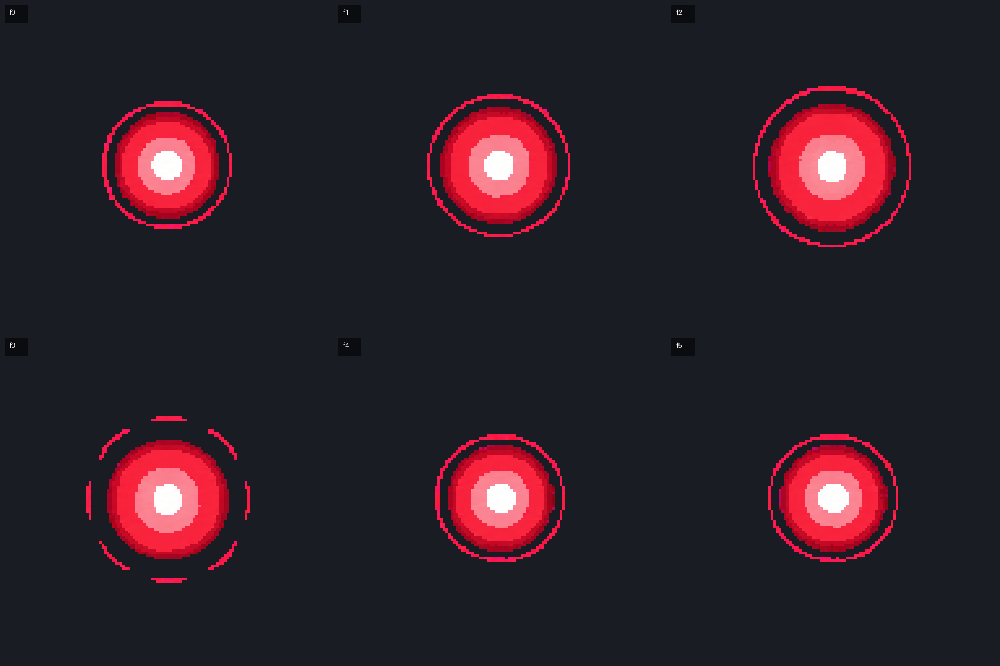
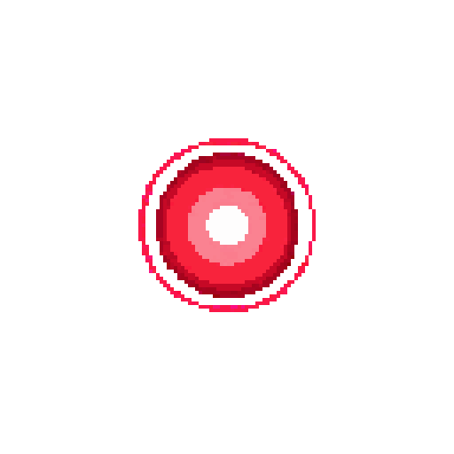
Technical record
- VFX candidate pack: all five new effects extracted; four exact 128×128 tiles for each stream; no new tile or packer warnings for these five.
- The sparse task worktree lacks several unrelated legacy raw VFX and Naruto sources. The pack reports those absent-source warnings; they are not changes in this batch.
- Naruto `beamStruggle_v01`: strict quantized scale gate failed; 47-color diagnostic pack had 3 frames. Head 1.40× idle; feet 0.62× idle. Approximate hand centers and their spread are recorded in the review notes and hitboxes sidecar.
- Final Astra anatomy audit is pending. No image approval, production integration, merge, or deployment has occurred.
Briefs: VFX specs · struggle poses · ADR 0034.